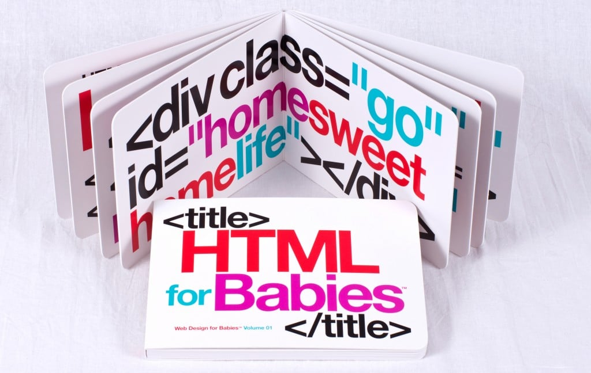

Web Design, HTML, CSS en 2024
por Mikhail Cruz Andrade Web Designer, Web Developer, WebAdmin
por Mikhail Cruz Andrade Web Designer, Web Developer, WebAdmin
El mundo esta lleno de problemas fascinantes por resolver.
HTML significa HyperText Markup Language y es el lenguaje con el que se construyen los sueños y la Web
CSS es el lenguaje con el que se describe la presentación de los documentos HTML
Es un sistema de información mundial que permite compartir contenido en la forma de documentos web a traves de Internet.
Segun Wikipedia es la disciplina que engloba las habilidades y procesos que se necesitan para la producción y mantenimiento de sitios web.
Se puede dividir en las siguientes areas:
Diseño es un metodo para solucionar un problema.
El buen diseño segun Dieter Rams, un diseñador industrial que ha trabajado con Braun:
Es solucionar problemas creando y manteniendo sitios web utilizando habilidades y procesos especificos
Solucionar, no crear problemas.
Aunque si creas problemas chiquitos para solucionarlos uno por uno también se vale.
Cualquier tipo de problema de información o conocimiento o interacción digital.
Ejemplos
Es una aplicación de escritorio y movil que permite el acceso a la Web interpretando documentos web y mostrandolos en pantalla.
Reliquia del pasado. Fue el primer navegador gratuito que se distribuyo como parte de un sistema operativo (Windows) y esto acelero la adopción de la Web.
También fue causante de muchos males porque no seguian estandares Web y esto causo mucho sufrimiento.
Fue un navegador web que llego a tener el 90% del mercado total de usuarios web.
Perdio la primer guerra de navegadores.
Netscape creo la Mozilla Foundation y libero el código fuente para crear Firefox.
Webkit es un motor de navegador mantenido por Apple y se usa en Safari y Chrome.
Su origen es de KDE HTML.
El DOM o Document Object Model es una interfaz o representación de un documento web en el navegador.
Un API o Application Programming Interface es una abstracción de como diferentes software pueden comunicarse entre ellos.
Una Web API es una interfaz que puedes programar en un navegador web
Ejemplos de Web APIs:
Son las metodologias que permiten que personas con discapacidad puedan utilizar y consumir sitios web.
Las discapacidades a tomar en cuenta son:
Pero la accesibilidad en la Web también beneficia a:
Un buen diseñador Web diseña para las personas.
Cualquier persona puede diseñar Webs, pero tiene que aprender
Sí, pero el diseño gráfico en la Web o el diseño de Interfaces de Usuario o UI es solo un conjunto de metologías, no es todo el diseño.
La W3C, WHATWG y el comite TC39 de ECMA son las organizaciones que crean, revisan y actualizan los estandares de las tecnologias con las que la web funciona, como HTML, CSS y JavaScript.
Es el periodo temprano de la web que duro de 1989 a 2004, la mayoria de los sitios eran personales.
HTML solo llego hasta la versión 4 y CSS 2.
Todavia existen algunos sitios de esta epoca. El más iconico es Space Jam
Es el periodo de la web que abarca desde 2005 hasta la actualidad.
Surge al mismo tiempo que la WHATWG, periodo en el que la W3C apostaba por XHTML.
La popularización de la Web comenzo con Ajax que es un conjunto de tecnologias HTML, JSON, JavaScript y la API XMLHttpRequest para hacer aplicaciones interactivas.
No existe la Web 3.0, si alguien te quiere vender Web 3.0 huye y cuentalo a quien más confianza le tengas.
Son las actualizaciones a los estandares asi como a las herramientas que sucedieron en este año.
El siguiente año sera la Web 2024
Son las versiones mas recientes de estas tecnologías, tenemos HTML5 desde 2014.
Con CSS3 pasa algo curioso y es que para su actualización se divio cada caracteristica en módulos y desde 2012 cada modulo se ha estado actualizando en diferentes etapas.
El primer modulo de CSS3 fue css-mediaqueries
En realidad estamos usando el estandar 5.1
Es el esfuerzo conjunto por los principales navegadores web y las compañias detras para que cada sitio web funcione en cualquier navegador siguiendo los estandares web
En la Web 1.0 teniamos la figura del WebMaster porque teniamos herramientas, y problemas mas simples.
El Web Designer es el heredero del Web Master de los 90s y principios de los 2000s.
CSS es un lenguaje declarativo, esto significa que no decimos pasos por pasos como se tiene que solucionar un problema sino describir como queremos que se vea la solución
Los estandares de HTML y CSS son estandares vivos, esto quiere decir que no estan escritos en piedra. Algunas nuevas funcionalidades son:
@scopetext-wrapY por eso tenemos Web Components, que es un conjunto de metodologías para que tu crees tus propios elementos y que sean reutilizables y sigan estandares web.
Necesitamos más gente diseñando Web pensando en solucionar problemas, no en crearlos.
Un buen diseñador sabe cuando reinventar la rueda y cuando no.
Un buen diseñador es un Web Admin, una persona que puede administrar o mantener sitios web.
Muchas gracias por venir a mi plática